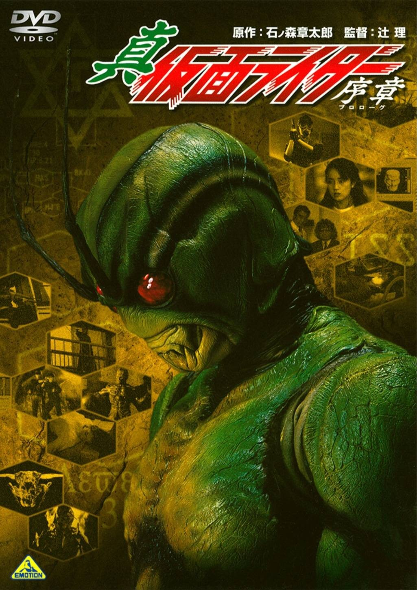
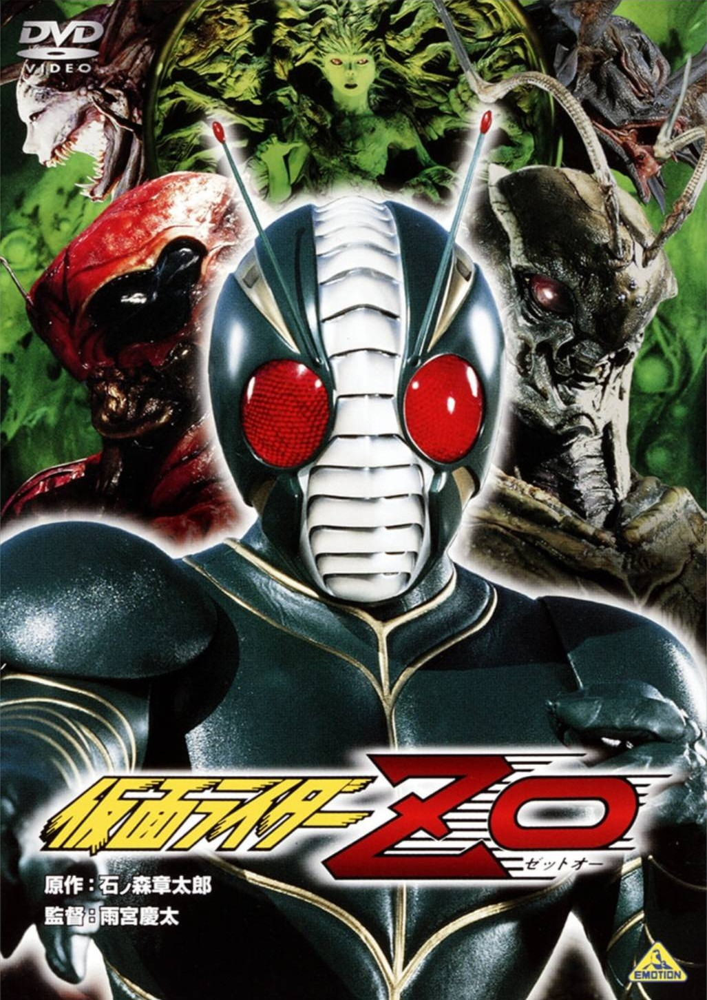
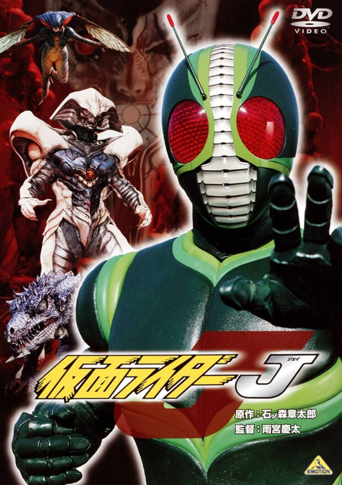
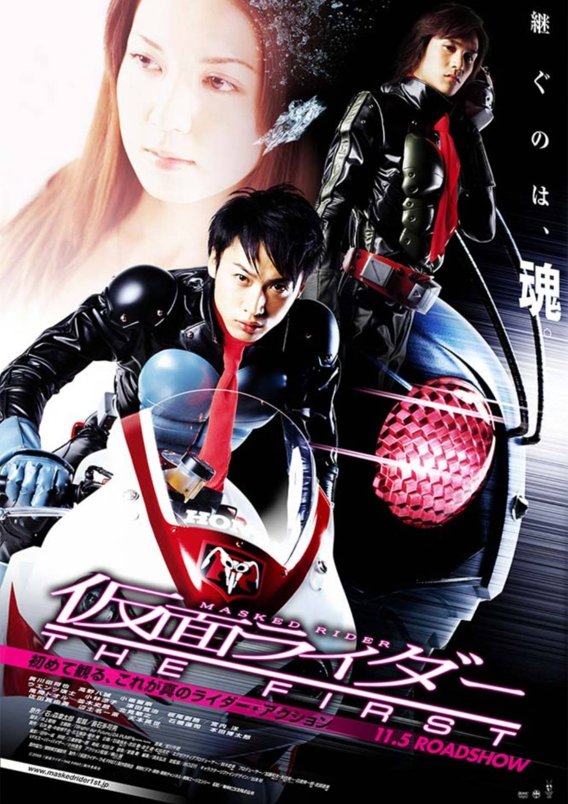
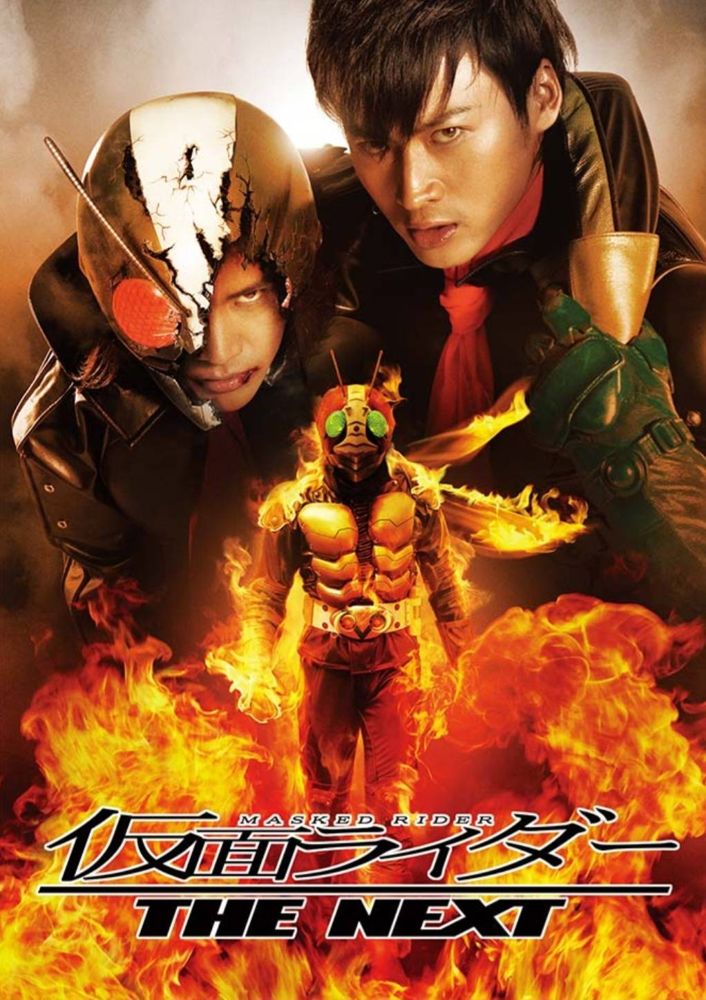
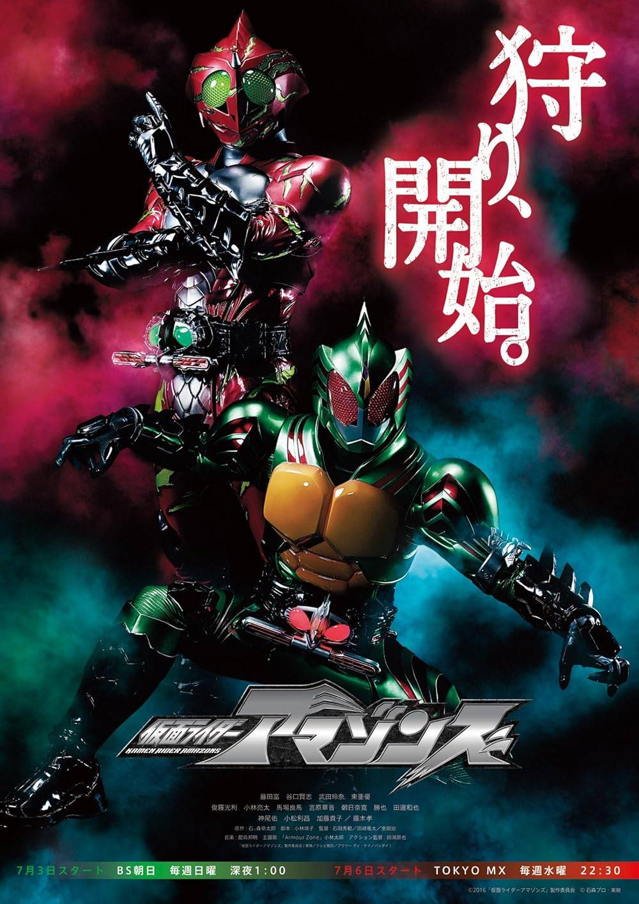
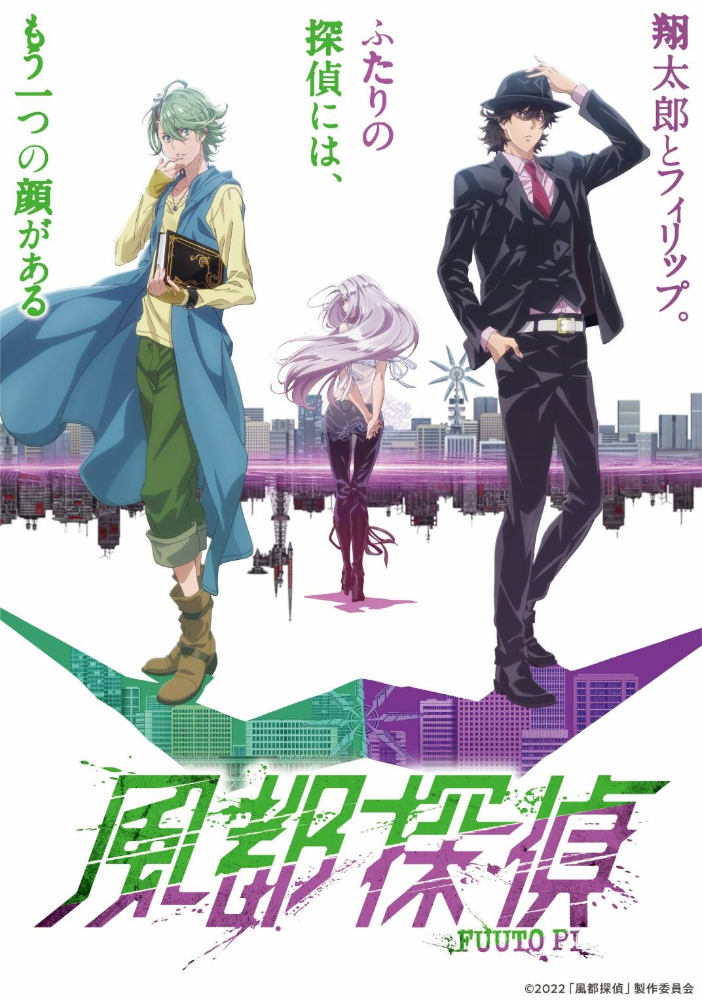
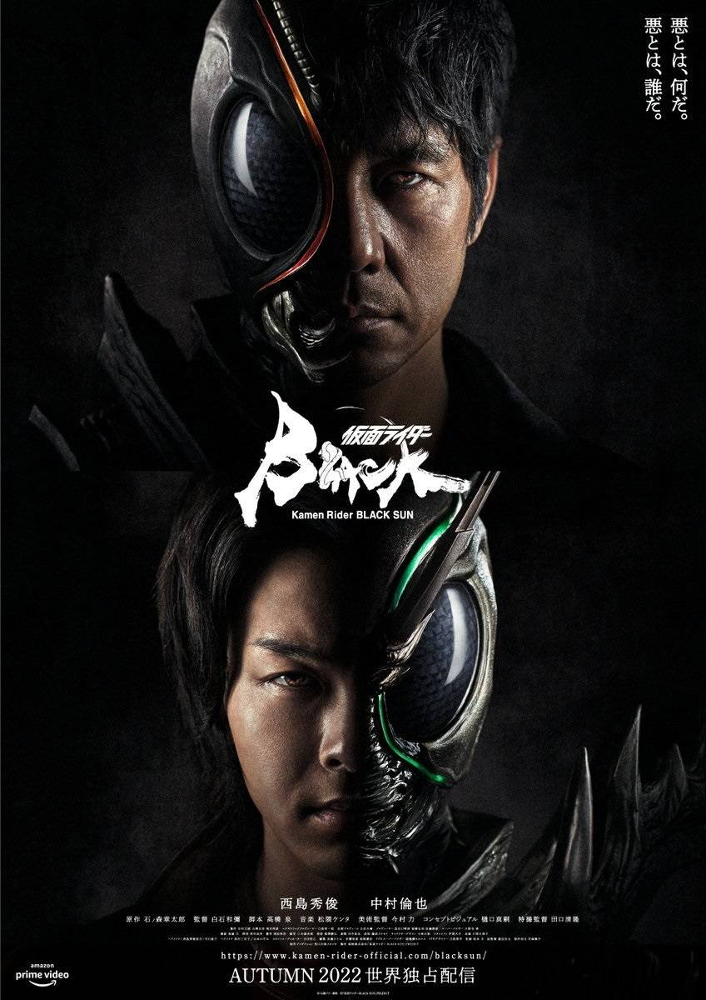
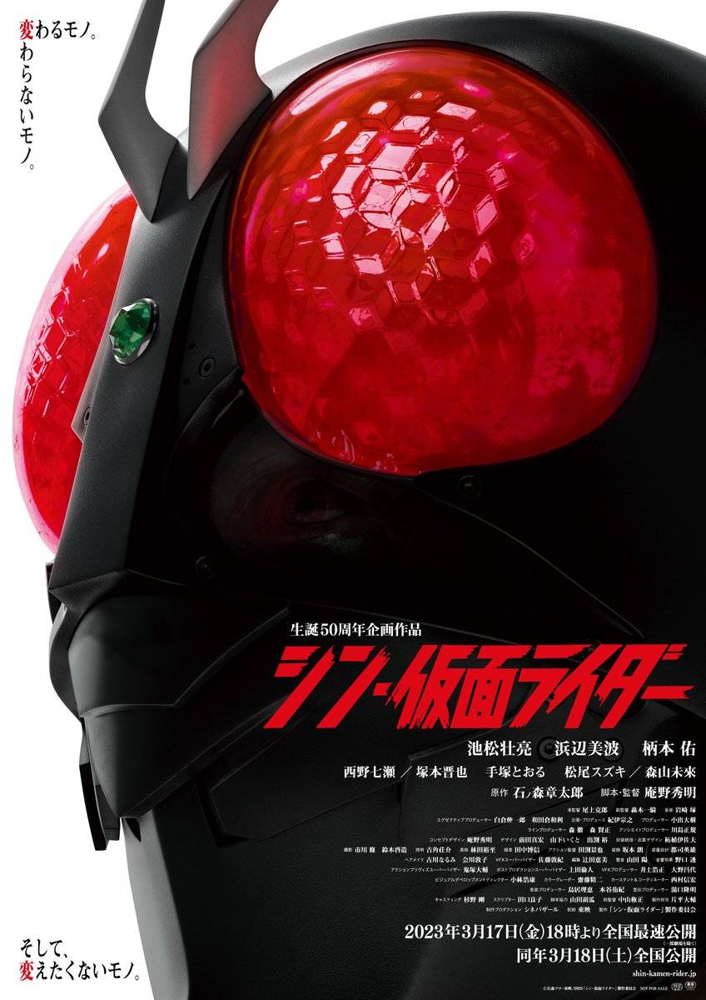

The “Others” category brings together special and alternative Kamen Rider projects that exist outside the annual TV series format.
These works often explore darker, more mature themes through films, OVAs, streaming series, and experimental adaptations.
Focusing on reinterpretation, parallel worlds, and creator-driven visions, these titles push the boundaries of what Kamen Rider can represent.
They challenge traditional hero narratives while expanding the franchise through bold storytelling, social commentary, and artistic reinvention.

A dark reimagining of Kamen Rider that emphasizes
body horror, biotechnology, and loss of humanity.
The story focuses on transformation as a curse rather than a blessing,
presenting a tragic and experimental vision of the Rider concept.

A minimalist Rider story with very limited dialogue,
relying heavily on visual storytelling.
It portrays a lone Rider protecting a child, highlighting themes of
instinct, mutation, and primal heroism.

The final Heisei-prelude film that expands the Rider mythos to a
mythic, almost kaiju-scale conflict.
Its emphasis on nature, humanity, and scale
makes it one of the most unique standalone Rider works.

A modern reboot of the original 1971 series with a grounded, cinematic tone.
It reinterprets the origins of Kamen Rider through
realism, tragedy, and updated character relationships.

A direct continuation of The First,
expanding the story with more Riders and deeper emotional conflicts.
The film further modernizes classic characters
while maintaining a darker and more serious atmosphere.

A streaming-exclusive series that presents Kamen Rider in a
violent, mature, and morally complex setting.
It explores themes of survival, identity, and humanity,
redefining the franchise for adult audiences.

An animated sequel to Kamen Rider W,
continuing the story through a noir detective lens.
he series deepens Fuuto’s world while blending Rider action
with mystery and mature character drama.

A bold reimagining of Kamen Rider Black that tackles
social discrimination, politics, and generational conflict.
Its heavy themes and realistic portrayal mark it as
one of the franchise’s darkest reinterpretations.

Directed by Hideaki Anno, this film reconstructs the original Rider with
psychological depth and modern visual language.
It balances homage and reinvention, focusing on loneliness, justice,
and the cost of being a hero.